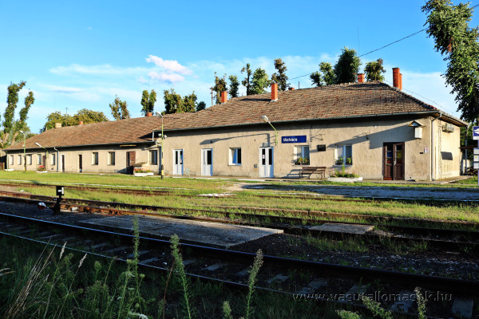
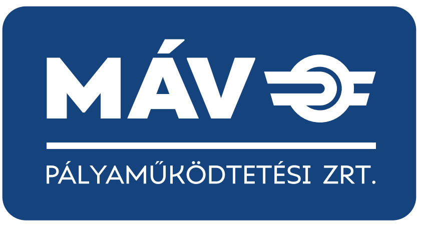

Miért érdemes ellátogatni Mohácsra?
Mohács egy különleges hely Magyarországon – tele történelemmel, kultúrával és autentikus élményekkel a Duna partján…

Fedezd fel Mohácsot egy kattintással!


Mohács egy különleges hely Magyarországon – tele történelemmel, kultúrával és autentikus élményekkel a Duna partján…

A busójárás egy különleges, télűző népszokás Mohácson, amelyet minden évben a farsang végén, húshagyókedden rendeznek meg. A főszereplők a busók, akik fából faragott, rémisztő maszkot és bundát viselnek, kereplőkkel, kolompokkal és zajkeltő eszközökkel vonulnak fel, hogy elűzzék a telet és a gonosz szellemeket.
ÚtvonaltervezésA mohácsi Duna-part a város egyik legszebb és legnyugodtabb része, ahol a természet, a történelem és a pihenés találkozik. A folyó partján hosszú sétány vezet végig, ahonnan gyönyörű kilátás nyílik a Dunára és a túlparti tájra. Padok, zöldfelületek és árnyékos fák teszik kellemes pihenőhellyé.
ÚtvonaltervezésA Duna–Dráva Nemzeti Park egy vadregényes, árterekkel, holtágakkal és ligeterdőkkel tarkított természeti kincs Dél-Dunántúlon, Mohács környékén.
ÚtvonaltervezésVasútállomás: Indóház tér 1.
Autóbusz-állomás: Szent István utca 6.
Buszpénztár: munkanapokon 05:45-07:45 és 12:00-13:00
Vasúti jegyek: állomáson kívüli jegyértékesítési pont, gépi menetjegykiadás.
Buszváró: H-P 05:30-17:30, hétvégén/ünnepnap 07:00-13:00
Mosdó: H-P 06:00-18:00, hétvégén/ünnepnap 08:00-12:00
Hangos utastájékoztatás az autóbusz-állomáson.
MÁVDIREKT: +36 (1) 3 49 49 49
Mobil: +36 (20/30/70) 499 4999
Parkoló a vasútállomás közelében.
Csoportos utazások szervezése: Pécs.
Vasúti forrás · Buszos forrás
Válassz fő kategóriát, azon belül alkategóriát, majd egy konkrét helyet. A térképen csak a kiválasztott hely jelenik meg, és külön gombbal kérhetsz gyalogos útvonalat az állomástól.
